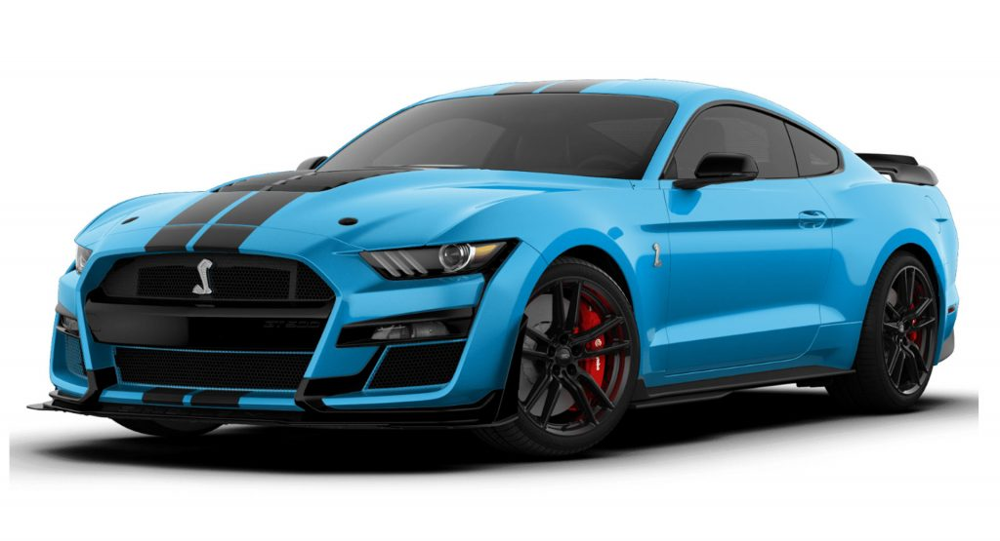
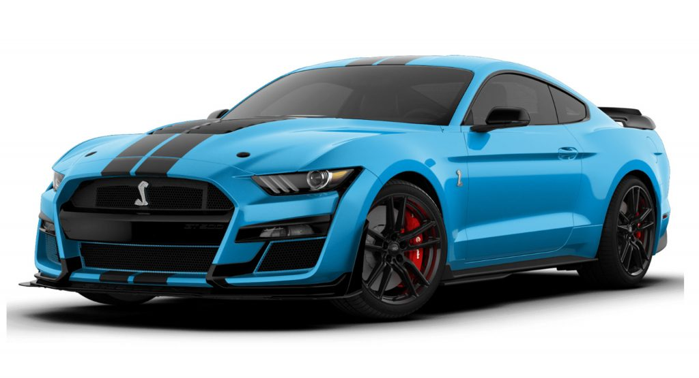
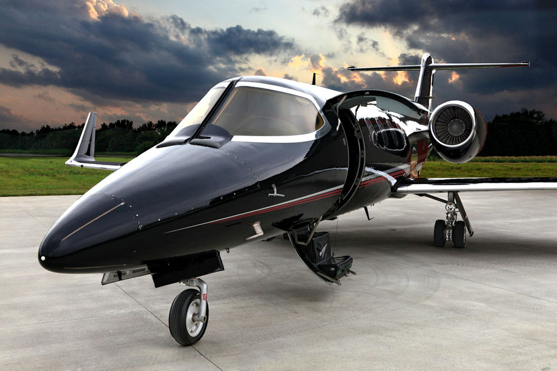
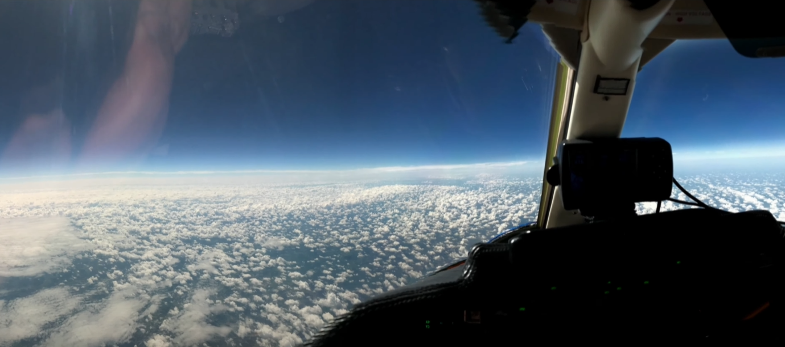

CREATIVE
This page is a unique page to my hobbies. I chose this page to be my hobbies page as I tend to spend a lot of my free time on more of my hobbies than anything else.To begin with, I will start with introducing my hobbies, I have a big obsession with cars and recently I have gotten myself into planes.
My obsession for cars began at the age of 14 when I first saw a blue Ford Mustang. My first thought at this was how can someone like a car, but that question was for another time as I was already hooked to it, Before I noticed, the owner of the car had already noticed me admiring his beautiful piece of machinery. I was still looking at the stunning light blue color that resembled the skies, before it left my sight, I heard it's engine roar, and before I knew it, my new hobby of cars began and it went long ways. I started learning about all types of cars and got so into it that my friends would call me if they had a question or doubt and sometimes even work on their car. Unfortunatly, I was not able to get a picture of the car at that time as I didn't have enough time, but on the right is a picture that resembles that car I saw. |
 

|
|   | My obsession for planes started a while back but didn't last long at the time as I was still searching for my career goals, I wanted to start a business in a field that was endlessly growing and found that Computers were the leading industry at the moment and was expected to grown endlessly, but my passon for planes didn't end there as I was still fascinated by planes and more specificly private jets, and this become one of my fun goals in life. To this day, I plan of owning and flying my very own private jet. The first picture is what started it all for me, This is a LearJet-31A, It is one of the greatest looking private jets in the aviation industry. When I first saw this on the internet, I caught the intrest I had caught on to with the Mustang, and just like the Mustang, this started all the aviation passion for me. I'm not the greatest with avaiation knowledge still but I am climbing the ladder step by step. The second photo is one of my greatest motivations in flying a plane. The view is from a Learjet 31A in the high skies, living it's life above the clouds. The picture itself is self explantory but in a sense, this is one of my motivations. |
This page is expected to grow as I am gaining more and more passion into cars and aviation.
P.S. Note: Clicking on the images leads to the source of the images.